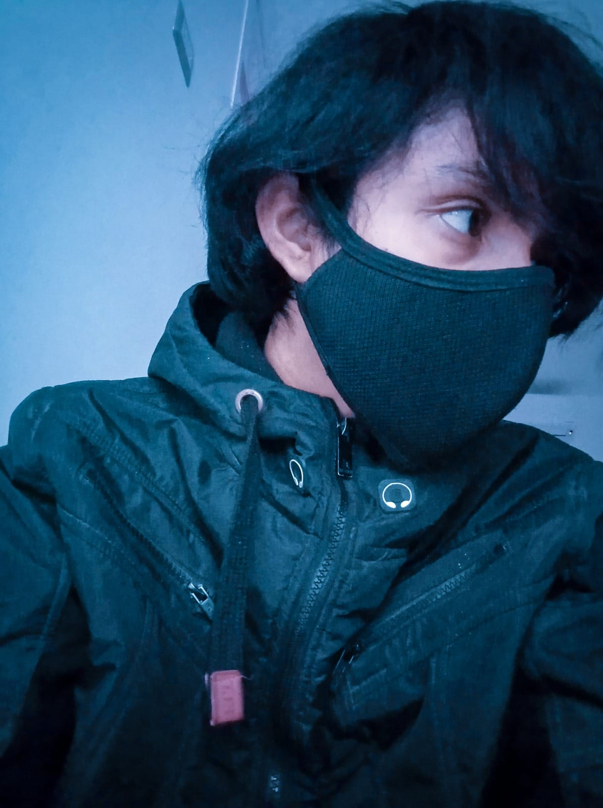

Hi there, I'm Arian Joseph 👋
Gracias por tu tiempo!

Poco a poco le agregaré mas cosas a la pagina, nada de esto tiene rigurosidad estrictamente disciplinaria.
Quiero que me perdones por la simplicidad de esta pagina y lo poco estetico que luce.
Sucede que las paginas web no son lo mio, me dedico a otras cosas menos a esto. Esta pagina web solo es un capricho mio para no usar redes sociales. Porque francamente, estoy cansado del roleo infinito.
La sensación de drenar tu cerebro con grandes dosis de dopa, es casi como morir en vida.
Equivale supongo a estar dopado casi todo el dia.
Un canal de youtube, mas una pagina web, ¿que mas libertad puedo pedir?
Ya el resto no son mas que tonterias. Cuando eres adolescente te emocionas, despues de 10 años te astia.
Lo unico que importa es mantenerse cuerdo el mayor tiempo posible, porque la locura no es nada cool.
Me encanta C++ <3
INTENTANDO HACER UN SIMULADOR DE ECONOMIA
usando de librerias SFML y QT
TIPOS DE AMENAZAS.
Los de robo de informacion, perdida y manipulacion de datos. Robos de identidad e interrupcion de servicio.
TIPOS DE VULNERABILIDADES
por lo general, los dispositivos de red que sufren ataques son los temrinales, servidores y computadoras de escritorio. Existen tres vulnerabilidades=debilidades: debilidades en el protocolo TPC/IP, en el OS, y debilidades del equipo de red. las de configuracion pueden incluir cuentas de usuario no seguras, contraseñas faciles, etc.
TIPOS DE MALWARE
codigo malicioso, diseñado para dañar, interrumpir, robar etc, existen los virus, que insertan copias de si mismo, formando parte de otro programa, se propaga de pc a pc. Los gusanos, a diferencia de los virus que requieren la propagacion de un archivo host infectado, los gusanos son independientes y no requieren de un programa host para propagarse. LOos trojan horses, un software que parece legitimo, se reproducen al infectar otros archivos. deben extenderse a traves de la interaccion del usuario. como abrir un archivo de correo, descargar o ejecutar archivos de la red.